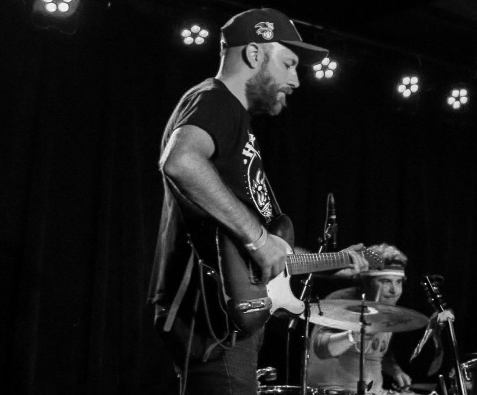

Freewheeling Roots Rock & Roll
“Sounds like The Byrds and Merle went off into the desert and did shrooms together.”
— White Squirrel Bar Patron
Four Minneapolis-based musicians and best friends bound by a deep love of roots music and its rich, river-like history, make up Tumbling Daisies. Having honed their craft in such bands as The 4onthefloor, The Federales, The Fattenin' Frogs, Mr. 500, and Hazel Strange, they draw from a deep blend of rock & roll, country, blues, folk, and jazz, bringing a high-energy show to every stage they step on. Their performances are anything but predictable—each show is a one-of-a-kind ride, fueled by improvisation, passion, and an undeniable synergy that keeps audiences on their toes. No two nights are ever the same, but the heart of the music always flows through.
Chris Holm – lead vocals, bass
James Gould – guitar
Jay Scabich – fiddle
Mark Larson – drums
Loading tracks…